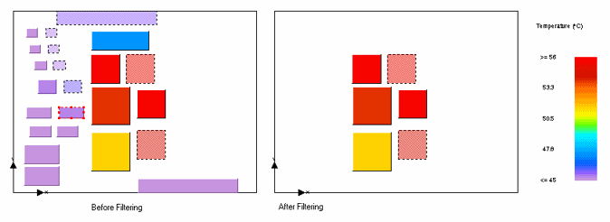

Heat
dissipated from components is modeled either discretely, restricting
heat output to the component location, or smeared over the board.
Figure 1 shows
the results display before and after filtering out the smaller components
from discrete modeling.
Figure 1. Filtering Smaller Components
Deactivated objects take no part in the
solution.